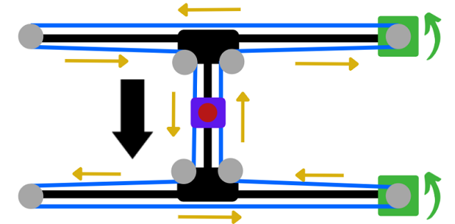
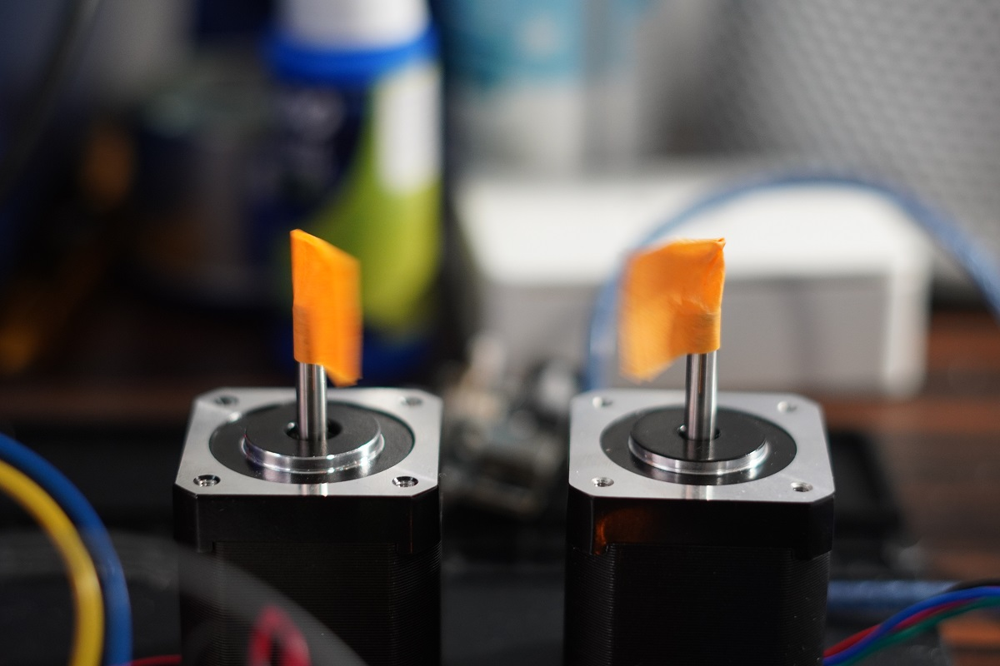
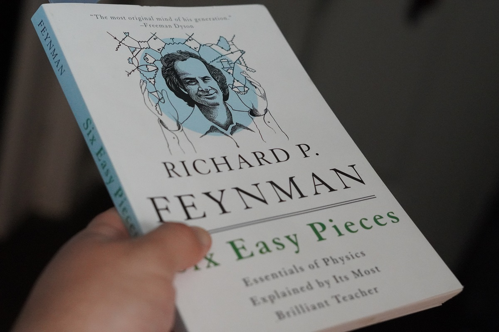
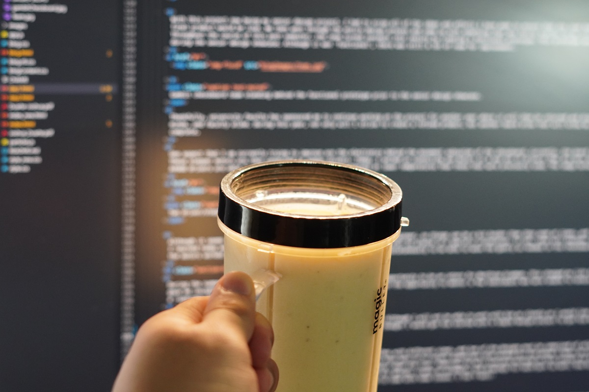

To rest or not to rest? That is the question.
I know what you're thinking. What do you mean rest? It's day two of your sixty day blog journey. That's the equivalent of failing your new years resolution on January 2nd. Well, I don't plan on stopping just yet. The question of resting came to me as I progressed throughout my very productive day. I worked on everything I had set out for the day and completed the tasks in much less time than I had set aside for it.
Although I did not just check everything off my to do list and enjoy some Netflix, I did find myself behind my phone screen. What can I say, social media has always found a way to make me mindlessly scroll throughout my days. I need to find a way to limit that. I hate to say it, but I think I just might have to delete Tik Tok.
This summer is dedicated to making the most of my time. Whether it be with my personal projects or spending time with friends and family, I want to ensure I made the most of it. To do that, I have limit my phone usage, and find a way to stay busy for the majority of the day. I have to become really good at becoming comfortable being uncomfortable. As soon as I start feeling comfortable in my day to day, I know I am not challenging myself to reach greater limits. One thing that may help me in continuously challenging myself would be to maintain a better schedule. I currently use Google calendar to track my daily tasks and schedule. I will strive to stick to the schedule, and update it more frequently throughout the day.
Aside from all of the phone scrolling, I did a lot. I was able to continue working on web development, work on Gambit, work on some cinematography, and knock out some chores.
Gambit
Today, I spent the day continuing to work on the motors. More specifically, I needed to find a way to make the motors turn simulataneously. The chessboard uses a H-Bridge gantry system to make the electromagnet move horizontally and vertically underneath the board. The H-Bridghe uses the rotational speed and direction to make the electromagnet move is specific directions. Below there is a better visualization of the what I mean about the movement.
 Programmed motors moving simulataneouslyUltimately, I was able to get two motors turning simulataneously. Or what atleast looked simulataneous. The code that I was writing in was C within arduino. This language operates line by line, so the a line of code can not run until the line before it is complete. This creates an issue when needing to operate two things at the same time. To combat this, the script that was written, makes the stepper motor turn one step at a time where then the other motor is instructed to turn one step as well. This is repeated until the motors have completed a set amount of steps. This process happens EXTREMELY quickly. It is quick enough that you are unable to tell that the motors are running one after another.
 Programmed motors moving simulataneouslyNow that the motors run 'simulataneously', I am now working on making the motors complete a set number of rotations on command. This will allow me to easily program the motors later down the road to fit my needs with respect to moving the electromagnet within the H-Bridge.
SHPE
I was not as busy with SHPE as it should have been. I spent my day completing a document that pertained to the Regional Leadership Development Conference that our chapter hosted this past semester. I am awaiting metrics that can then be documented and distributed to our recommenders as well as used within our report. Tomorrow I plan to complete this document, distribute the information to our recommenders, and work on the report that is due on June 15th.
Reading
This is a new section that I hope to include within most of my blogs. Here, I hope to summarize what I read from day to day. Unfortunately, I am not a ridiculously fast reader so don't expect me to do full book summaries. Maybe chapter summaries if that.
Todays reading and the reading I expect me covering over the next week or so is that of Richard P. Feynman. A physicist before my time that left his mark. The book, Six Easy Pieces: Essentials of Physics Explained by Its Most Brilliant Teacher, is just that. I am currently on page 35 and my eyes have been opened as the book covers essentials of physics that were previously hard to grasp. This book is based off the lectures completed by Richard Feynman during some of his years at CalTech. These lectures broke down extraordinary topics to levels in which a fifth grader could understand. This act of breaking a complex topic down to a level that is easily understandable is a testament of true understanding. As I go about this summer, I plan to continuously learn. In doing so, I will make the greatest of efforts to turn the topics I know into something that can be easily understood.
As far as what I have read goes, the pages have began covering physics from a fundamental approach. I have learned more about atoms in motion, and I am currently reading a section that is going into greater depths of Quantum physics. Whatever that means.
 Six Easy Pieces: Essential Physics Explained by Its Most Brilliant TeacherEats
My grocery stash is nearing its end. For the first time in a while mind you. What can I say? I like to eat out. Nevertheless, today was filled with me cooking the remainders of my groceries and preparing it for the days to come. I air fried some lemon pepper chicken, made some overnight oats (surprisingly now one of my favorite things- sorry for ever doubting you Abraham if you are reading this), and made a delicious smoothie. 2 Bananas, some grade A HEB 2% milk, a splash of vanilla, and a hefty amount of ice and boom. A smoothie that brought me back to my childhood and will hopefully cure my workout pains for the week.
 A banana smoothie a day makes the soreness go awayCinematography
I have always thought it would be cool to be a vlogger of some sorts. But, yet again, I never have gone through with it. Today, I took one step in that direction. I took my drone out to capture the sunset and see what type of views I could get of my backyard. Aggieland that is.
 A shot of aggieland from a point not many see
A shot of aggieland from a point not many see
Although I do not see myself pushing that publish button on YouTube just yet, I am goint to start recording more of my days and capturing some moments that I wouldn't mind reliving. Who knows what I'll capture.
Personal Project 'Internship'
Kevin did not stop by today. Not because of him, but because of my terrible sleeping schedule. Nevertheless, through some convincing, he continued working on his project. He began putting is idea and sketch into Solidworks. He had some trouble making the base of the stand, and struggled on an issue that could have been easily resolved has he just asked. I am going to try to be a better mentor to where he may feel more comfortable asking for help. After all, that's what I'm here for.
Habit Tracking
Today, I journaled, worked out, read, tracked my caloric intake, and worked on at least one of my personal projects. Today was a good day.
What I am thankful for
I am thankful for everyone that has been so supportive of starting this venture.
Get comfortable being uncomfortable. Do More. - J.D.